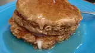

pancakes

Description
A pancake is a flat cake, often thin and round, prepared from
a starch-based batter that may contain eggs, milk and butter and cooked on a hot surface such as a griddle or frying pan, often frying with oil or butter. It is a type of batter bread.
ingredients
1 cup all-purpose flour
1 ⅓ cups dry milk powder
1 teaspoon baking powder
1 ½ teaspoons baking soda
1 teaspoon salt
2 cups whole wheat flour
¾ cup white sugar
14 eggs, lightly beaten
3 cups water
¼ cup butter, melted
3 tablespoons vinegar
- In a large bowl, sift all-purpose flour, milk powder, baking powder, baking soda and salt. Stir in whole wheat flour. In a small bowl, combine sugar, eggs, water, butter and vinegar. Make a well in the flour mixture, and pour in the egg mixture. Mix until smooth.
- Heat a lightly oiled griddle or frying pan over medium heat. Pour or scoop the batter onto the griddle, using approximately 1/4 cup for each pancake. Cook until pancakes are golden brown on both sides; serve hot.